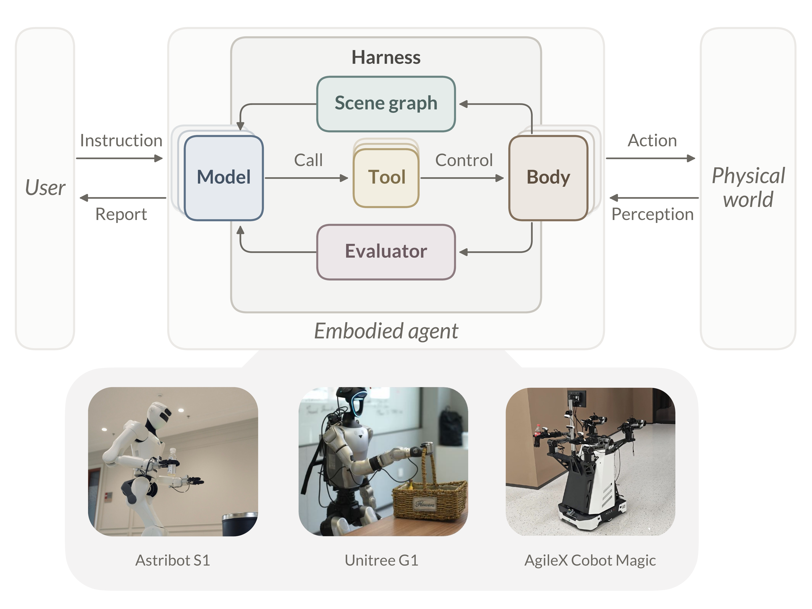

The rise of coding agents [1, 2, 3] has reshaped software engineering. Rather than produce correct code in a single pass, they write, test, read the error, fix, and test again, converging on correctness through a closed loop. The insight is not a better model, but a better harness [4, 5]: the surrounding infrastructure that grounds the model in its environment, mediates its actions through tools, and closes the loop between intent and outcome through evaluation and recovery. Complex behaviors emerge from the interaction between a simple agentic loop [6] and its tools. Plug in new tools and the same architecture that writes code also produces documents, queries external services, and conducts open-ended tasks with the user; capabilities arrive without changing the model or the loop. The harness has become a paradigm [7].
[8]: Brohan et al. (2023), RT-1: Robotics Transformer for Real-World Control at Scale. [9]: Octo Model Team et al. (2024), Octo: An Open-Source Generalist Robot Policy. [10]: Black et al. (2025), π0.5: A Vision-Language-Action Model with Open-World Generalization.All of this, however, unfolds in digital environments. In the physical world, the building blocks are in place. Embodied foundation models now perform a range of tasks with growing competence, whether navigating cluttered rooms or manipulating everyday objects [8, 9, 10]. Yet a collection of strong atomic capabilities does not constitute a useful robot. What remains open is orchestration: weaving these capabilities into long-horizon behavior in a dynamic world shared with the people it serves. This is exactly the problem coding agents have proved tractable in the digital world. Their answer is not to wait for an omnipotent model, but to build a carefully engineered harness that amplifies what the model can achieve. Does the same paradigm, then, hold in the physical world?
An agent is, in essence, a closed loop of perception and action: it perceives the world, acts on it, and perceives the result. The architecture of coding agents provides a natural blueprint. At each turn the language model selects a tool (e.g. read a file, run a test, edit code), observes the result, and decides the next action. Each robot capability (e.g. navigation, manipulation) can likewise become a callable tool; a language model orchestrates them through the same agentic loop. The design decouples orchestration from execution. The agentic loop accesses policies and platforms only through their tool interfaces, remaining agnostic to their internals. Complex, long-horizon tasks need not be solved monolithically; the agentic loop addresses them step by step, and new behaviors emerge from flexible composition of tools.
At first glance, transferring this blueprint to the physical world should be a simple matter of redefining the tools. It is not. The physical world is far more complex than software. Closing the loop demands two abilities: reading the state of the world, and judging the outcome of an action. Software grants both for free; the physical world grants neither.
Gap 1: Readability of the World
A software environment is a designed artifact, built by humans for machines to read and execute. Source code is text; a language model can read it, grep it, diff it, reason about it. A coding agent perceives it simply by reading, because the environment is already structured, symbolic, and persistent. At any moment, the agent can take in the entire state, exact and complete.
The physical world is not a designed artifact. It simply exists. An embodied agent perceives by sensing. Its input is a 30 fps stream of RGB-D frames, continuous, high-dimensional, and unstructured. The agent sees only a local, momentary slice of the world, never the whole. It must piece the whole together frame by frame and hold it in memory; the world keeps no record to consult. A coding agent's “codebase” is free; a physical agent's must be constructed.
Gap 2: Verifiability of Outcomes
Software environments possess an elegant property that is easy to take for
granted: every action has a natural termination signal and an
explicit success/failure judgment. Processes exit. Commands return
exit codes. Errors print to stderr. A coding agent runs a test
and instantly knows PASS or FAIL, and on failure
reads the stack trace to diagnose the cause. This closed loop is
infrastructure provided for free by the operating system and the language
itself.
The physical world offers none of this. A Vision-Language-Action (VLA) policy outputs a continuous action stream with no built-in “done” signal. There is no exit code; the world does not report “grasp succeeded.” The robot closes its gripper. Did it grasp the cup, or did the cup slip? Did the gripper close on air, or on the rim? A coding agent's “test suite” is free; a physical agent's must be constructed.
What appears “free” to a coding agent is the accumulated product of decades of software engineering. Formal grammars, type systems, and persistent file systems make the state of software readable; exit codes, stack traces, and test frameworks make the outcome of an action verifiable. None of it was built for coding agents; they arrived to find the infrastructure ready, and flourished. Physical environments carry no such inheritance; the missing infrastructure must be built. Nor are the two gaps an arbitrary pair. An agentic loop reaches its environment only through an interface with two directions: actions flow out, and information flows back. The outbound half is the one robotics has spent decades building, which is why policies wrap readily into tools. The inbound half carries exactly two signals: the state of the world, and a verdict on the last action, the same pair the classic agent–environment interface returns [11]. Hence exactly two gaps, one for each missing signal.
1. From the Greek thea, “sight; view.”We present Thea1, a harness of embodied agents. Thea inherits the architecture of coding agents: the same agentic loop, capabilities exposed as tools, context, skills, and memory. On this foundation, it supplies the pieces the physical world is missing. Scene Graph as Context restores readability: a persistent, structured model of the scene that the language model can read and reason about as a coding agent reads source code. Evaluation as Exit Codes restores verifiability: it detects when an action should terminate, judges whether it succeeded, and on failure diagnoses the cause, closing the loop that the physical world otherwise leaves open.
Through Thea, we demonstrate that with carefully adapted designs, the harness behind coding agents fits embodied agents well. It wires diverse foundation models, policies, and embodiments into a working whole. The resulting system exhibits the following properties, as shown in Figure 1: